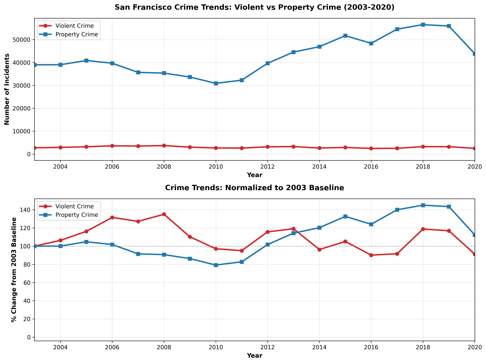

How violent crime and property crime have diverged over two decades of data
When we talk about crime in San Francisco, we're usually lumping together very different phenomena. A robbery is nothing like a car theft. An assault differs fundamentally from a burglary. Yet official crime statistics often treat them as a monolithic "crime problem." This story examines what happens when we separate violent crimes from property crimes—and discover two strikingly different trends over the past two decades.
Using incident data from the San Francisco Police Department (2003-2020), we classify crimes into two broad categories:
The story that emerges is one of uneven movement: crime patterns are not uniformly improving. Each type has its own rhythm—property crime dips and recovers, while violent crime stays closer to its original level.
The chart below tells the core story. Between 2003 and 2020, property crime in San Francisco did not follow a simple downward path. After a mid-2000s decline, property crime rebounded and ended the period roughly 12% higher than its 2003 level. That means the overall picture is one of fluctuation and recovery, not steady improvement.
Violent crime also shows a more subtle pattern than a straight decline. After peaking in the mid-2000s, violent crime settled back near its 2003 baseline and finished 2020 at about 91% of the 2003 count. The bottom panel makes this clear: both series move up and down, with property crime showing a larger swing and violent crime staying closer to the baseline.

The data shows that property crime cycles while violent crime stays closer to baseline. What might explain these different behaviors? Several factors likely play a role:
None of these are certain—this is data analysis, not causal proof. But the patterns prompt important questions: Why did property crime fall sharply mid-decade and then rebound? What changed in the economy, policing, or reporting that explains that swing? And why has violent crime been so resistant to change?
Crime is never evenly distributed across a city. As property crime has cycled up and down over the 17-year period, certain neighborhoods have consistently captured a disproportionate share of these incidents. The map below shows all reported burglaries in San Francisco from 2018-2020—a total of 19,928 incidents. Red zones indicate high clustering; cooler colors (blue, green) show lower-incident areas.
Three urban corridors stand out: the Tenderloin, Market Street / Downtown, and scattered hotspots in the Bayview. This matters because it tells us that property crime is not a city-wide problem uniformly—it's concentrated in specific, exploitable areas. Understanding *why* these neighborhoods see higher burglary rates could point to factors like foot traffic, building security, economic stratification, or opportunity for fencing stolen goods. It also suggests that targeted interventions could be more effective than city-wide approaches.
The city-wide trend masks crucial neighborhood variation. Different districts face different crime problems. Some areas deal primarily with property crime; others have a higher proportion of violent crime. Understanding this mix is essential for effective policing and community response. The interactive chart below breaks down crime by district, showing which crimes dominate where across San Francisco's top 10 crime hotspots (2018-2020).
How to read this: Each bar represents one police district. The colored segments stack to show the mix of crime types—larceny theft, burglary, robbery, aggravated assault, and others. Hover over any segment to see exact counts. You'll notice that some districts are property-crime-heavy (tall segments for larceny and burglary) while others see a higher proportion of violent crime. This variation means that a one-size-fits-all policing approach will not work: each district needs a strategy tailored to its specific crime mix and underlying drivers.
San Francisco's story over the past two decades is not a simple victory lap. Property crime fell in the middle of the period but then rebounded and ended the period above its 2003 level. Violent crime stayed closer to its original baseline, ending 2020 at roughly 91% of its 2003 count. That makes the overall pattern more about cycles and recovery than about steady improvement.
This raises important questions:
The data doesn't answer these policy questions—that requires expertise beyond data analysis. But it does show that headline summaries can be misleading: the real story is a more complicated mix of change, reversal, and persistence.
This analysis is based on reported incidents only. Many crimes go unreported; reporting rates vary by crime type and neighborhood. A murder is almost always reported; a shoplifting or car break-in often isn't. The mid-2000s dip in property crime might reflect genuine crime reduction, *or* it might reflect reporting changes. Similarly, the rebound could reflect increased crime, increased reporting, or both. We cannot tell from this data alone. The stability of violent crime over 17 years might reflect true stability, or it might reflect constant reporting patterns masking underlying changes. This is why data analysis must always be paired with qualitative research, community feedback, historical context, and domain expertise before drawing policy conclusions.
San Francisco Police Department Incident Reports, 2003-2020 (publicly available via data.sfgov.org)
All visualizations were created using Python (Pandas, Matplotlib, Plotly, Folium). Code and analysis are part of a data analysis course focused on narrative visualization and responsible data communication.